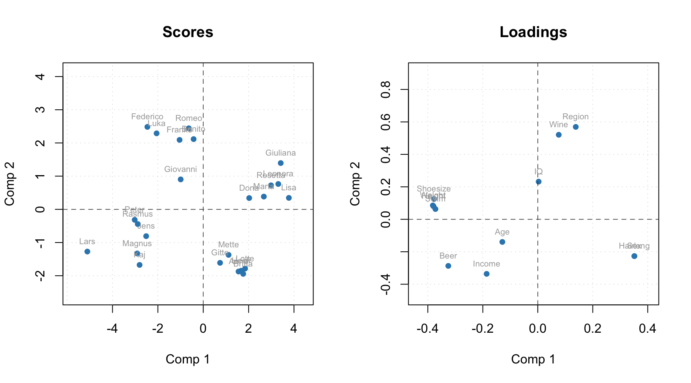
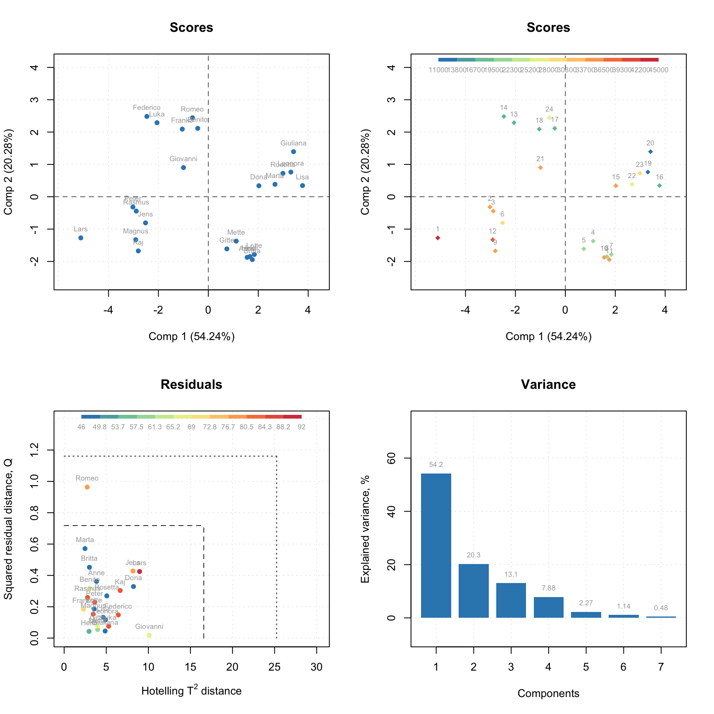
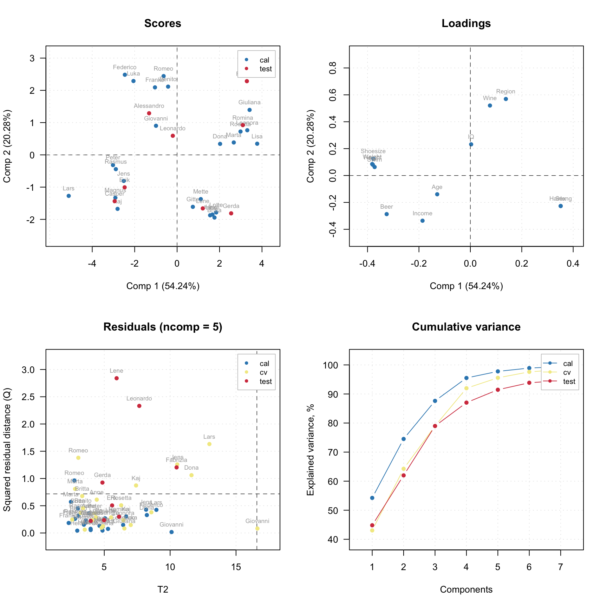
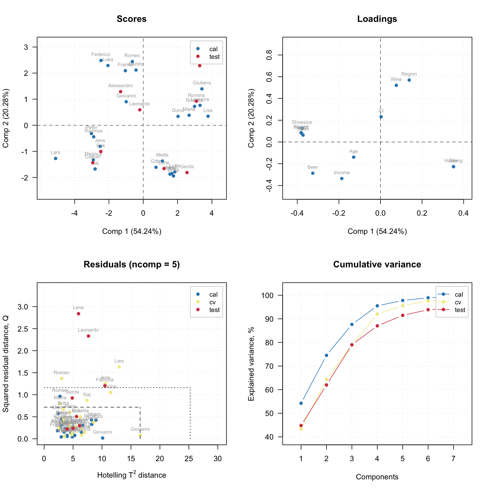
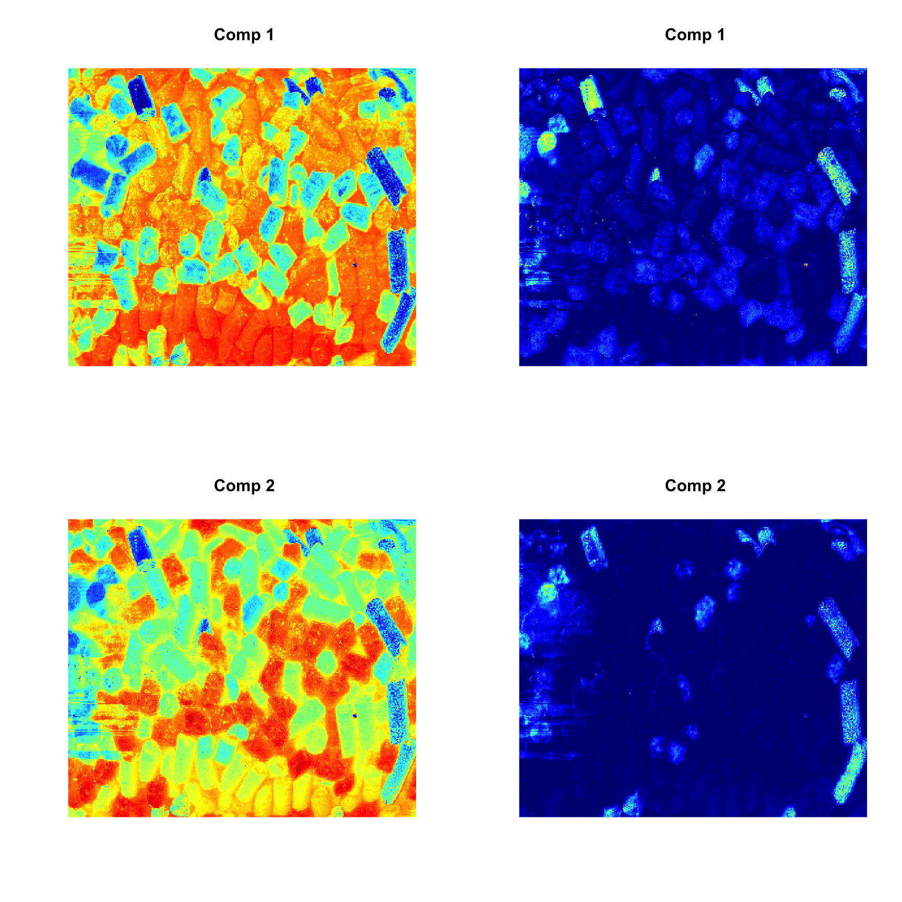
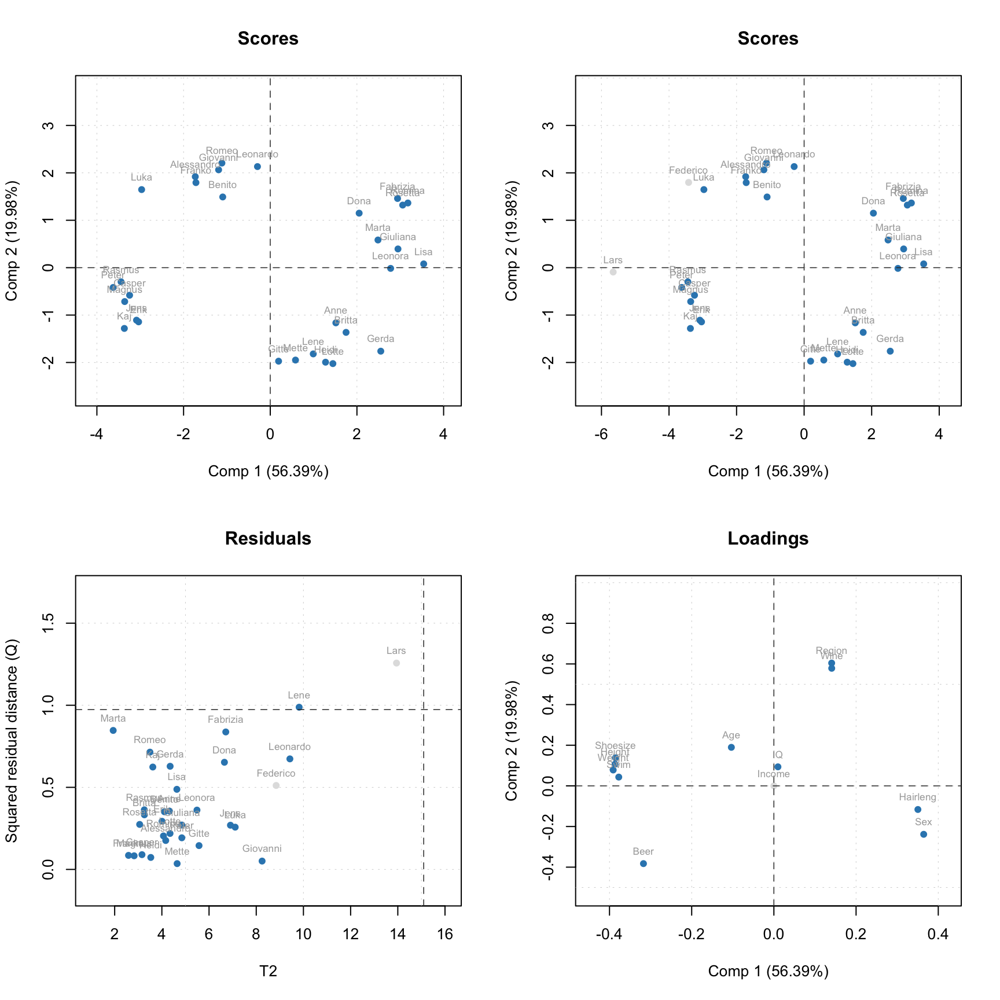

Plotting methods
First of all you can use the methods mdaplot() and mdaplotg() (or any others, e.g. ggplot2) for easy visualisation the results as they all available as matrices with proper names, attributes, etc. In the example below we create several scores and loadings plots. Here I assume that the last model you have created was the one with test set and cross-validation.
par(mfrow = c(1, 2))
mdaplot(m$calres$scores, type = 'p', show.labels = T, show.lines = c(0, 0))
mdaplot(m$loadings, type = 'p', show.labels = T, show.lines = c(0, 0))
To simplify this routine, every model and result class also has a number of functions for visualization. Thus for PCA the function list includes scores and loadings plots, explained variance and cumulative explained variance plots, T2 distances vs. Q residuals and many others.
A function that does the same for different models and results has always the same name. For example, plotPredictions will show predicted vs. measured plot for PLS model and PLS result, MLR model and MLR result, PCR model and PCR result and so on. The first argument must always be either a model or a result object.
The major difference between plots for model and plots for result is following. A plot for result always shows one set of data objects — one set of points, lines or bars. For example, predicted vs. measured values for calibration set or scores values for test set and so on. For such plots method mdaplot() is used and you can provide any arguments, available for this method (e.g. color group scores for calibration results).
And a plot for a model in most cases shows several sets of data objects, e.g. predicted values for calibration and validation. In this case, a corresponding method uses mdaplotg() and, therefore, you can adjust the plot using arguments described for this method.
Here are some examples for results:
par(mfrow = c(2, 2))
plotScores(m$calres, show.labels = T)
plotScores(m$calres, pch = 18, cgroup = X.c[, 'Income'], show.labels = T, labels = 'indices')
plotResiduals(m$calres, show.labels = T, cgroup = X.c[, 'Weight'])
plotVariance(m$calres, type = 'h', show.labels = T, labels = 'values')
The color grouping option is not available for the group (model) plots as colors are used there to underline the groups.
Now let’s look at similar plots (plus loadings) for a model.
par(mfrow = c(2, 2))
plotScores(m, c(1, 3), show.labels = T)
plotLoadings(m, c(1, 3), show.labels = T)
plotResiduals(m, col = c('red', 'green', 'blue'))
plotVariance(m, type = 'h', show.labels = T, labels = 'values')
Method plot() shows the main four PCA plots as a model (or results) overview.
plot(m, show.labels = T)
You do not have to care about labels, names, legend and so on, however if necessary you can always change almost anything. See full list of methods available for PCA by ?pca and ?pcares.
Support for images
As it was described before, images can be used as a source of data for any methods. In this case the results, related to objects/pixels will inherit all necessary attributes and can be show as images as well. In the example below we make a PCA model for the image data from the package and show scores and residuals.
data(pellets)
X = mda.im2data(pellets)
m = pca(X)
par(mfrow = c(2, 2))
imshow(m$calres$scores)
imshow(m$calres$Q)
imshow(m$calres$scores, 2)
imshow(m$calres$Q, 2)
Manual x-values for loading line plot
As it was discussed in the previous chapter, you can specify a special attribute, 'xaxis.values' to a dataset, which will be used as manual x-values in bar and line plots. When we create any model and/or results the most important attributes, including this one, are inherited. For example when you make a loading line plot it will be shown using the attribute values.
data(simdata)
X = simdata$spectra.c
attr(X, 'xaxis.name') = 'Wavelength, nm'
attr(X, 'xaxis.values') = simdata$wavelength
m = pca(X, 3)
plotLoadings(m, 1:3, type = 'l')Excluding rows and columns
From v. 0.8.0 PCA implementation as well as any other method in mdatools can exclude rows and columns from calculations. For example it can be useful if you have some candidates for outliers or do variable selection and do not want to remove rows and columns physically from the data matrix. In this case you can just specify two additional parameters, exclcols and exclrows, using either numbers or names of rows/columns to be excluded. You can also specify a vector with logical values (all TRUEs will be excluded).
The excluded rows are not used for creating a model and calculaiton of model’s and results’ performance (e.g. explained variance). However main results (for PCA — scores and residuals) are calculated for these rows as well and set hidden, so you will not see them on plots. You can always e.g. show scores for excluded objects by using show.excluded = TRUE. It is implemented via attributes “known” for plotting methods from mdatools so if you use e.g. ggplot2 you will see all points.
The excluded columns are not used for any calculations either, the corresponding results (e.g. loadings or regression coefficients) will have zero values for such columns and be also hidden on plots. Here is a simple example.
data(people)
m = pca(people, 5, scale = T, exclrows = c('Lars', 'Federico'), exclcols = 'Income')
par(mfrow = c(2, 2))
plotScores(m, show.labels = T)
plotScores(m, show.excluded = T, show.labels = T)
plotResiduals(m, show.excluded = T, show.labels = T)
plotLoadings(m, show.excluded = T, show.labels = T)
# show matrix with loadings (look at row Income and attribute "exclrows")
show(m$loadings)## Comp 1 Comp 2 Comp 3 Comp 4 Comp 5
## Height -0.386393327 0.10697019 -0.004829174 0.12693029 -0.13128331
## Weight -0.391013398 0.07820097 0.051916032 0.04049593 -0.14757465
## Hairleng 0.350435073 -0.11623295 -0.103852349 -0.04969503 -0.73669997
## Shoesize -0.385424793 0.13805817 -0.069172117 0.01049098 -0.17075488
## Age -0.103466285 0.18964288 -0.337243182 -0.89254403 -0.02998028
## Income 0.000000000 0.00000000 0.000000000 0.00000000 0.00000000
## Beer -0.317356319 -0.38259695 0.044338872 -0.03908064 -0.21419831
## Wine 0.140711271 0.57861817 -0.059833970 0.12347379 -0.41488773
## Sex 0.364537185 -0.23838610 0.010818891 0.04025631 -0.18263577
## Swim -0.377470722 0.04330411 0.008151288 0.18149268 -0.30163601
## Region 0.140581701 0.60435183 0.040969200 0.15147464 0.17857614
## IQ 0.009849911 0.09372132 0.927669306 -0.32978247 -0.11815762
## attr(,"exclrows")
## [1] 6
## attr(,"name")
## [1] "Loadings"
## attr(,"xaxis.name")
## [1] "Components"Such behavior will help to exclude and include rows and columns interactively, when GUI add-in for mdatools() is available.